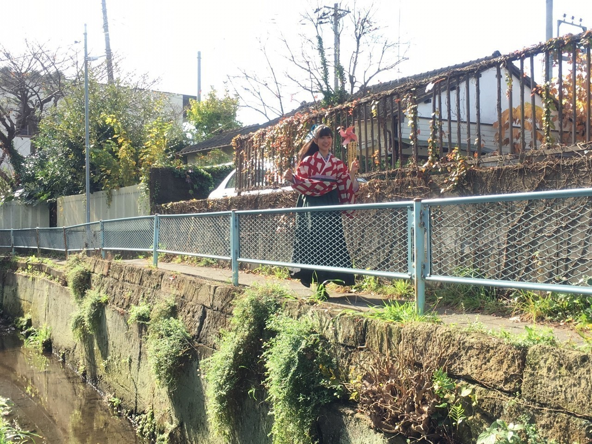
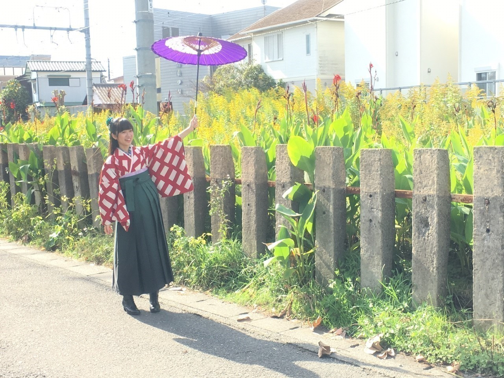
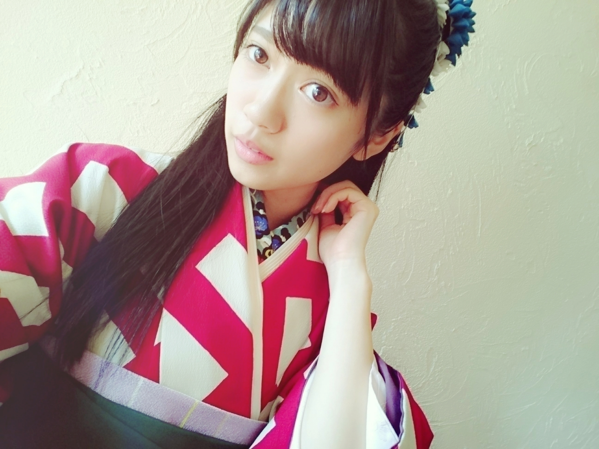

2016/0415Fri寺田蘭世です。
お疲れ様です
公式で出てますが
全国握手会のライブは
怪我（捻挫）のため欠席致します。
捻挫のせいで今日まで色々なお仕事を欠席せざるおえなかったのが
凄くつらいです。
今まで学業とか
家族の用事とか
何もかも置いて
1番を乃木坂46にしてたので
欠席です
って言葉が凄く重いです
だからといっても
どうすればいいのか
どうしようもない事なのですが
とても、もどかしいです。
でも、今の期間を無駄にする事なく
今までずっと出ていたものを1回外から客観的にとらえられるチャンスとして
考えます。
でも本当にこの期間は
物の価値観とかを変えれる期間にしたいと思っています。
いい意味で
でも、握手会はあります！
楽しみましょう！
みんな同じ空間にいます！
そう考えたら気持ちがましになる！
発表されてからすぐ
皆さんがくれたコメントを読んで元気貰いました！
テラダ頑張るぞ！
走りたい( ´-`)

飛びたい

着地

ほい( ´-`)


昨日の地震心配です。
特に九州地方の方
私もおじいちゃんが九州地方なので
電話しました、、、
余震も多いと思いますが
引き続きお気をつけてください
寺田蘭世
2016/04/15 13:06


コメント(497)
まつてて！
地震心配だね（ーー；）
握手楽しみにしてますー！
握手会でまっててね！
アンダラ頑張れるように
休んで整えることも大事だよ
怪我とかは避けられないから
走って飛んで頑張って
アンダラで盛り上がりましょう！！
蘭世も前向きに！俺らも前向きに考えるしこれからのお仕事頑張ってな！応援してます(*^^*)
今日発売の雑誌はあとで読みます！
早く治ることをねがってます、、、
今週の握手会行くね！！
楽しみにしてますー(^-^)
悪化しないように今はしっかりと治してください(^^)
健康第一だから、まずは治療に専念してしっかりと回復してから溜まってる分のもやもやをぶつけていこう^_^
自分も骨折がやっとほぼ治ったから、できることが増えてきたp(^_^)q
九州に住んでるけど、熊本ほど酷くはないけど蘭世のブログでまたハッピーな気持ちになったo(^_-)O
とりあえず、蘭世の勢いとまらんぜ！！
これからも頑張ろう(*^^*)
じゃ*･゜ﾟ･*:.｡..｡.:*･'(*ﾟ▽ﾟ*)'･*:.｡. .｡.:*･゜ﾟ･*
俺は熊本でかなり地震がひどくて怖かったけど大丈夫！
らんぜのじぃちゃんも無事でよかったね！
怪我お大事にね(><)
蘭世のライブみたいなあって思うファンの人もいるかもしれないけど私は怪我を早く治して治ったら出れなかった分ライブで元気にダンスして欲しい( ¨̮ )
無理だったら全然無理しなくていいからね( ´･ᴗ･` )
蘭世が飛んでる写真かわいすぎて( ´･ᴗ･` )
早く帰ってきてね
文がメールのまんまやな笑
写真なんか笑ってしまった←
早く蘭世の笑顔見たいね( ´-`)
九州の方ほんと心配ね(>_<)
寺田蘭世様
こんちは、蘭世捻挫てお仕事出来なくて落ち込んでるね。
身体が有っての仕事だから今はしっかり治して
治してから仕事沢山がんばろよ。
ファンは、蘭世の捻挫が心配なんだよ。
治してから、取り返せば良いよ。
へこむな蘭世！今はしっかり治して、次に繋げよう。
蘭世のモバメ、すごくプロ意識を持って活動している事を改めて知り、更に尊敬しました。もどかしい状況でしょうがその中で無理しないで頑張って下さいね( ^ω^ )
九州の方々の無事を自分も祈っております。
僕はげんきです！
地震怖かった…
やつをです‼︎
もう明日だ握手握手シェイクハンズシェイクハンズ‼︎
大正浪漫寺田かわゆすやぁ〜
明日ライブでれない分、脚動かせない分、楽しい握手にしよう‼︎
一旦立ち止まることも大切だよ。アンダラに向けてしっかり治すことがファンにとって一番嬉しい。
蘭世が一番悔しいと思うけど、これも成長するための試練だと思う。
俺なんかが何言ってんだと思われてもいいです。
治すことが1番‼︎だよ。
これだけはお願い。
明日よろぴくぴく〜
蘭世のおじいちゃんは大丈夫だった？(*_*)
まだまだ 無理はしないでいいんだよ
じっくり 治して下さいね
地震 びっくりですね
震度7 私は、経験有りません
これ以上、被害が出ないことを
願っています。
じゃあ、またね
「寺」のうちわをぶら下げて
握手会に参加している者です！
足はまだ痛いんだね>_<
無理しないでねー！
明日蘭世レーン行くからね！
蘭世の完全復活待ってます。
昨日の地震はすごかったみたいだね、
自分は出掛けてたから家に帰ってから
知ったんだけど、
東日本大震災を思い出しちゃったよ。
津波が来なかったのが不幸中の幸いって
ところだね。。
亡くなられた方もいるから幸いとか
言ってられないけど
自分もできることを探そうと思った！
明日楽しみにしてます！
無理しないでくださいね！！
まずはケガを治してください！
あまり焦らずに、体調を戻していってね。
全国ツアーでは、元気な姿で会えるといいですね。
あつき
元気ならんぜちゃん待ってます
こんにちは
こんばんは
捻挫、本当に悔しいね
この機会にカラダ休めてください
全握楽しみにしてる
人生、頑張らないという努力をするのも大事なんですね。
私自身が子供の頃は、そんな大人はずるいと思っていたけれど、そんなこと無いと気づいた時がありました。
突っ走り続けるのもパワーが必要だけれど、我慢をするのは、それ以上にカッコイイ場合がある。
でも我慢できない私は、らんらんの握手会に行く。笑
（'◇'）
そうですよ！＼(^_^)みんなで楽しみましょう！！
捻挫ゆっくり治していってね！＼(^_^)／
怪我大変だけど、無理だけはしないでね！
焦ることとかきっとあるけど治してから巻き返せばいいんだよ(*^ー^)ノ♪
蘭世着物めっちゃ似合うよね！
すげー可愛いし！
朝ドラのヒロインみたいヽ(・∀・)ノ
またコメントするね！
捻挫はしようがないよ。
握手会でがんばりを見せましよう!
足首の筋肉を鍛える方法を考えよう。
九州のおじい様は大丈夫だったかな？心配だよね。
捻挫でいろいろできないことがあるのはつらいよね(´・ω・`)
でも、この経験が蘭世にとってプラスになるように信じてるし祈ってるよー(｀・ω・´)
地震は今回は余震も多いし心配だよね(´・ω・`)
これ以上被害が出ないといいよね(´・ω・`)
元気に戻って来るの待ってるよ！！
ユンです( ´-`)
捻挫。。。心配です。。。。
でも全部治る前に無理したらダメですから！
いまは回復に集中してください！
握手会も頑張ってください！
蘭世を見に行った知り合いは全部すごく蘭世はすごい言ってくれるから
僕もすごく期待してます( ´-`)
大好きです
オフショット！！僕がすごく好きな衣装ですから
すごく嬉しいです！！
地震も心配ですね。。。
蘭世は特に優しいですから
みんな無地だったらいいですけど。。。
アンダーライブを向かってファイトです！
応援します！
また
ユン
捻挫に対する蘭世の悔しさよく伝わったよ！！
東北シリーズのアンダラまでに早く治ること祈ってるよ！
(o^^o)
コメントする